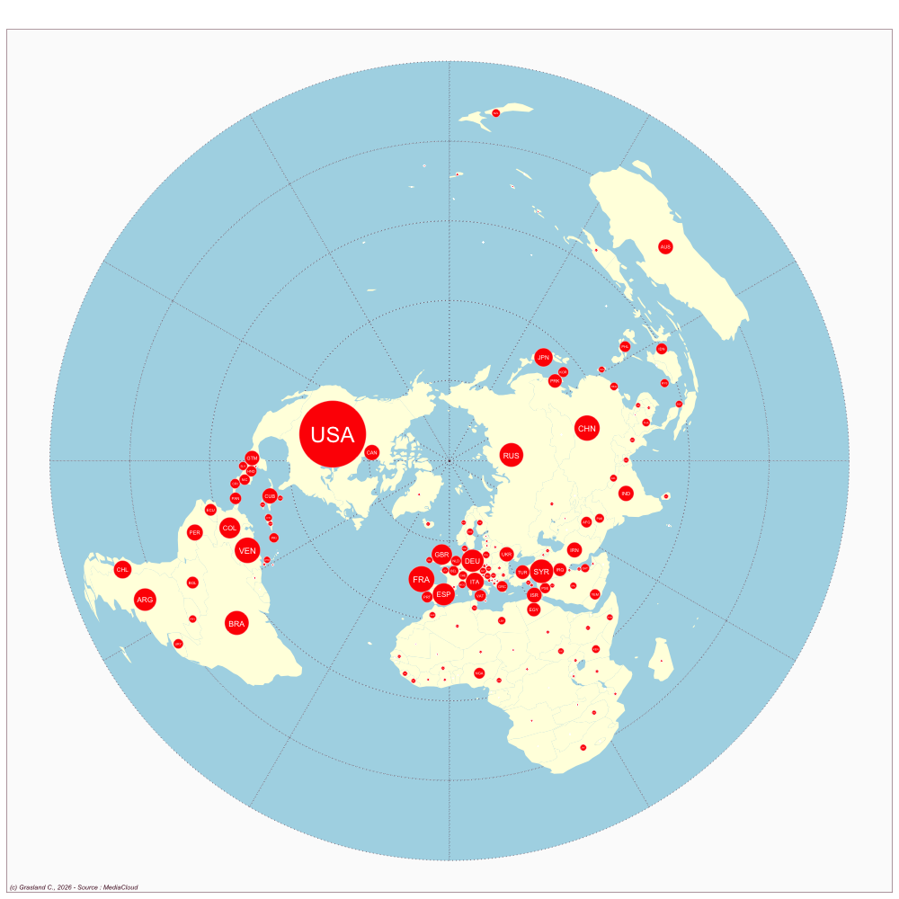

Mexico
- Website : El Informador
Scale
- Global
- National
Topics
- General news
- Political news
- Economic news
Publications
Gonzalez RA. 2021. Mexican journalism under siege. The impact of anti-press violence on reporters, newsrooms, and society. Journalism Practice 15: 308–328